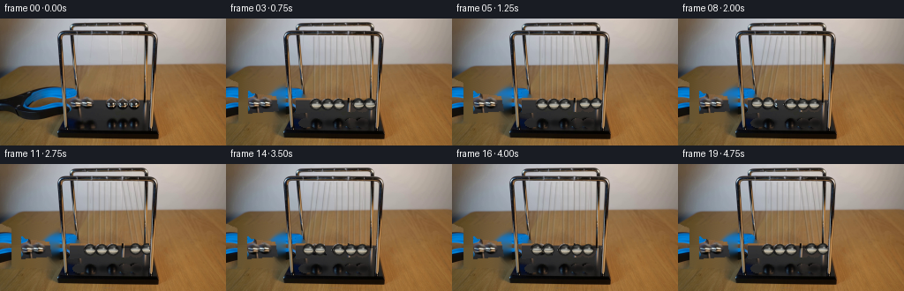
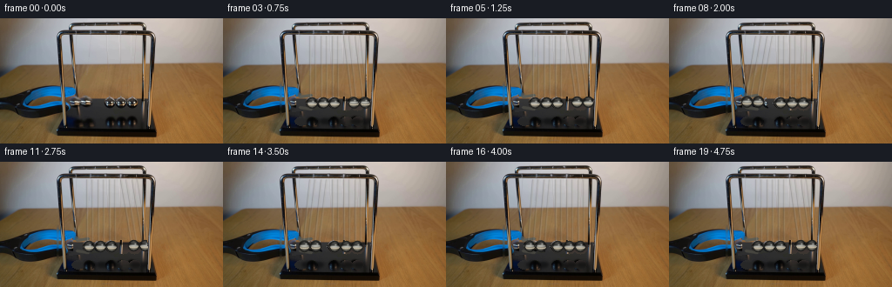
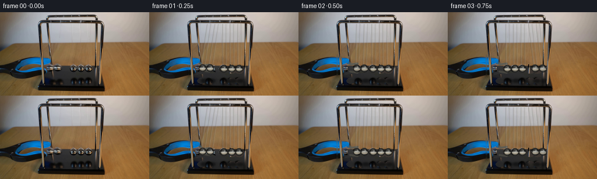
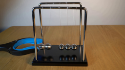
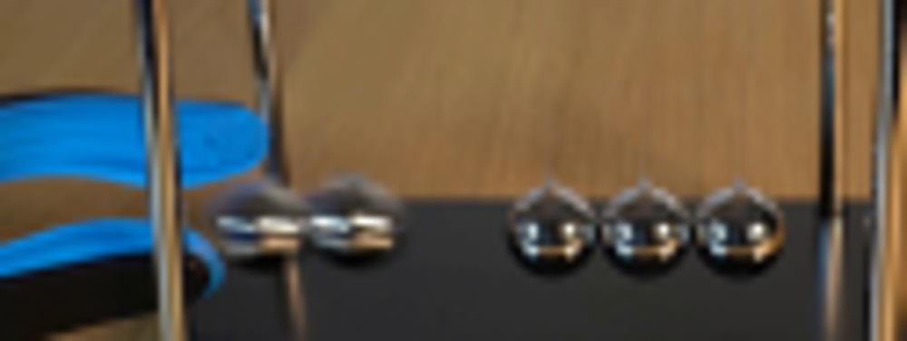
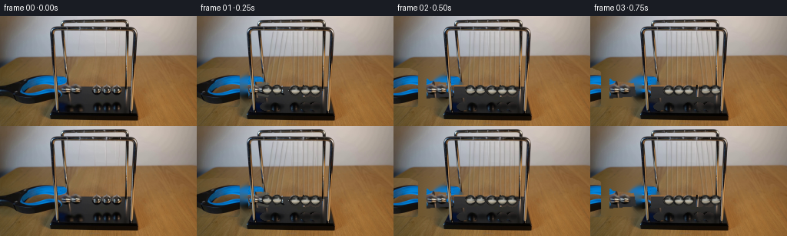

CODING AGENTS AS PIXEL WORLD MODELS
traex/GPT-5.6-Sol · 0053
点击播放 · 原生 RGB 像素
逐轮保存的候选
回放视频、检查图与代码变化。
每份候选均可单独播放。实际图片检查记录在下方工具轨迹中。
候选 01播放与检查图
点击播放 · 原生 RGB 像素

展开代码变化
--- 上一保存版本
+++ 本次保存版本
@@ -0,0 +1,169 @@
+from pathlib import Path
+import math
+import cv2
+import numpy as np
+from PIL import Image
+import artifact_io
+
+CASE = Path(__file__).resolve().parent
+src = np.array(Image.open(CASE/'first_frame.png').convert('RGB'), dtype=np.uint8)
+H,W = src.shape[:2]
+
+# Isolate the hand grabber and the five balls to reveal a plausible locked-off scene.
+# Telea is useful here because all removed areas are small and lie on broad, softly lit surfaces.
+remove = np.zeros((H,W), np.uint8)
+# blue/black handle and its metal jaws (left of the cradle)
+poly = np.array([(0,69),(56,68),(70,74),(83,85),(110,88),(113,104),
+ (78,107),(66,118),(0,116)], np.int32)
+cv2.fillPoly(remove,[poly],255)
+# individual ball silhouettes and immediate shadows/reflections
+for cx,cy in [(89,96),(101,96),(128,97),(141,97),(154,97)]:
+ cv2.circle(remove,(cx,cy),9,255,-1)
+ cv2.ellipse(remove,(cx,118),(7,5),0,0,360,255,-1)
+# Preserve the foreground left upright: it crosses in front of the tool.
+remove[:,68:79] = 0
+bgr = cv2.cvtColor(src,cv2.COLOR_RGB2BGR)
+clean = cv2.cvtColor(cv2.inpaint(bgr,remove,5,cv2.INPAINT_TELEA),cv2.COLOR_BGR2RGB)
+# Inpainting can brighten the black plinth. Blend in nearby intact rows to keep it dark.
+# (only under the erased tool/balls, preserving natural texture elsewhere)
+for y in range(90,126):
+ for x in range(79,169):
+ if remove[y,x]:
+ sx = min(166, max(112, x+25))
+ clean[y,x] = src[y,sx]
+# restore structural cradle parts that are never supposed to move
+clean[:,68:79] = src[:,68:79]
+clean[124:135,58:184] = src[124:135,58:184]
+
+# Soft alpha mask for extracting and translating the visible grabber in the first moments.
+grab_mask = np.zeros((H,W),np.uint8)
+cv2.fillPoly(grab_mask,[poly],255)
+grab_mask[:,68:79]=0
+grab_mask = cv2.GaussianBlur(grab_mask,(3,3),0.45)
+
+def alpha_composite(dst, overlay, alpha):
+ a = alpha.astype(np.float32)[...,None]/255.0
+ return np.clip(dst.astype(np.float32)*(1-a)+overlay.astype(np.float32)*a,0,255).astype(np.uint8)
+
+def shifted_grabber(frame, dx, openness):
+ """Retract the blue-black grabber left while its slim jaw tips open."""
+ M=np.float32([[1,0,dx],[0,1,0]])
+ ov=cv2.warpAffine(src,M,(W,H),flags=cv2.INTER_LINEAR,borderMode=cv2.BORDER_CONSTANT,borderValue=(0,0,0))
+ am=cv2.warpAffine(grab_mask,M,(W,H),flags=cv2.INTER_LINEAR,borderMode=cv2.BORDER_CONSTANT,borderValue=0)
+ out=alpha_composite(frame,ov,am)
+ # two subtle steel jaw tips spread apart just after release
+ if dx > -34:
+ tipx=int(101+dx)
+ col=(93,92,83)
+ cv2.line(out,(tipx-10,int(94-openness)),(tipx+3,int(92-openness)),col,2,cv2.LINE_AA)
+ cv2.line(out,(tipx-10,int(99+openness)),(tipx+3,int(101+openness)),(70,69,63),2,cv2.LINE_AA)
+ return out
+
+def add_blurred_ellipse(im, center, axes, color, alpha=1.0, sigma=2.0):
+ mask=np.zeros((H,W),np.uint8)
+ cv2.ellipse(mask,(int(round(center[0])),int(round(center[1]))),axes,0,0,360,255,-1,cv2.LINE_AA)
+ mask=cv2.GaussianBlur(mask,(0,0),sigma)
+ a=(mask.astype(np.float32)/255.0*alpha)[...,None]
+ im[:] = np.clip(im*(1-a)+np.array(color,dtype=np.float32)*a,0,255).astype(np.uint8)
+
+def draw_string(im, p0, p1, strength=1.0):
+ # dark hairline plus a small lit edge, as in the source photograph
+ layer=im.copy()
+ cv2.line(layer,(int(round(p0[0])),int(round(p0[1]))),(int(round(p1[0])),int(round(p1[1]))),(61,61,57),1,cv2.LINE_AA)
+ cv2.line(layer,(int(round(p0[0]+1)),int(round(p0[1]))),(int(round(p1[0]+1)),int(round(p1[1]))),(170,165,150),1,cv2.LINE_AA)
+ cv2.addWeighted(layer,0.27*strength,im,1-0.27*strength,0,im)
+
+def draw_metal_ball(im,cx,cy,r=6.5):
+ # Supersampled physically-inspired chrome shader. Reflections are horizontal,
+ # matching the room/table bands visible in the original balls.
+ S=4
+ R=int(math.ceil(r*S))+4
+ size=2*R+1
+ yy,xx=np.mgrid[-R:R+1,-R:R+1]/S
+ rr=np.sqrt(xx*xx+yy*yy)
+ inside=rr<=r
+ edge=np.clip((r+0.45-rr)/0.8,0,1)
+ # Sphere lighting and reflected horizontal room bands
+ radial=np.sqrt(np.clip(1-(rr/r)**2,0,1))
+ base=30+78*radial
+ band=92*np.exp(-((yy-0.4)/1.05)**2) - 42*np.exp(-((yy+2.5)/1.35)**2)
+ warm=24*np.exp(-((yy-3.1)/1.35)**2)
+ side=-42*np.clip(np.abs(xx)/r,0,1)**2
+ val=np.clip(base+band+warm+side,8,218)
+ rgb=np.stack([val+warm*.40,val+warm*.18,val-warm*.25],axis=-1)
+ # small white ceiling glint at upper right and a narrow equatorial gleam
+ gl=115*np.exp(-((xx-2.0)**2/(1.15**2)+(yy+2.0)**2/(0.9**2)))
+ rgb=np.clip(rgb+gl[...,None],0,245)
+ rgb[...,2] *= 0.96
+ rgba=np.zeros((size,size,4),np.uint8)
+ rgba[...,:3]=rgb.astype(np.uint8)
+ rgba[...,3]=(edge*inside*255).astype(np.uint8)
+ rgba=cv2.resize(rgba,(size//S,size//S),interpolation=cv2.INTER_AREA)
+ hh,ww=rgba.shape[:2]
+ x0=int(round(cx-ww/2)); y0=int(round(cy-hh/2))
+ x1=max(0,x0); y1=max(0,y0); x2=min(W,x0+ww); y2=min(H,y0+hh)
+ if x2<=x1 or y2<=y1:return
+ patch=rgba[y1-y0:y2-y0,x1-x0:x2-x0]
+ a=patch[...,3:4].astype(np.float32)/255
+ im[y1:y2,x1:x2]=np.clip(im[y1:y2,x1:x2]*(1-a)+patch[...,:3]*a,0,255).astype(np.uint8)
+ # crisp dark chrome rim
+ cv2.circle(im,(int(round(cx)),int(round(cy))),int(round(r)),(32,32,30),1,cv2.LINE_AA)
+ cv2.ellipse(im,(int(round(cx)),int(round(cy+1))),(int(r-1),1),0,0,180,(205,193,169),1,cv2.LINE_AA)
+
+# Geometry: five equally spaced balls, each a 77 px pendulum from the upper bar.
+eq=np.array([102.,115.,128.,141.,154.])
+piv_y=19.5
+bottom_y=97.0
+length=bottom_y-piv_y
+A=math.asin(14.0/length) # initial two-ball amplitude visible in frame 0
+impact0=.56
+halfcycle=.90
+
+def state(t):
+ th=np.zeros(5,float)
+ if t < impact0:
+ # released from rest at the left amplitude
+ a=-A*math.cos((math.pi/2)*(t/impact0))
+ th[0:2]=a
+ else:
+ k=int((t-impact0)//halfcycle)
+ u=(t-impact0)-k*halfcycle
+ amp=A*(0.94**k)
+ a=amp*math.sin(math.pi*u/halfcycle)
+ if k%2==0: th[3:5]=a # two right balls fly out
+ else: th[0:2]=-a # then two left balls fly out
+ x=eq+length*np.sin(th)
+ y=piv_y+length*np.cos(th)
+ return x,y,th
+
+frames=[]
+for i in range(20):
+ if i==0:
+ frames.append(src.copy())
+ continue
+ t=i/4.0
+ frame=clean.copy()
+ # The operator releases immediately and smoothly withdraws the tool.
+ q=min(1.0,t/0.82); q=q*q*(3-2*q)
+ frame=shifted_grabber(frame,int(round(-55*q)),3.7*math.sin(math.pi*min(1,t/.62)))
+ x,y,th=state(t)
+ # shadows sit on the plinth; airborne balls cast slightly lighter, displaced shadows
+ for j in range(5):
+ lift=max(0.0,bottom_y-y[j])
+ add_blurred_ellipse(frame,(x[j]+2.3,117.5),(6,3),(7,8,9),alpha=.56-.012*lift,sigma=1.5)
+ # bifilar strings, behind the spheres
+ for j in range(5):
+ # Two near-parallel suspension threads with fixed top anchors.
+ draw_string(frame,(eq[j]-3.2,piv_y),(x[j]-2.8,y[j]-2.0),.9)
+ draw_string(frame,(eq[j]+3.2,piv_y),(x[j]+2.8,y[j]-2.0),.75)
+ for j in range(5):
+ draw_metal_ball(frame,float(x[j]),float(y[j]),6.45)
+ # Restore bright edge of side uprights in front, only where appropriate.
+ # Right/left uprights remain immobile and reinforce the locked-off camera.
+ frame[17:126,69:76] = np.where((src[17:126,69:76].mean(2,keepdims=True)>62),src[17:126,69:76],frame[17:126,69:76])
+ frame[17:126,169:175] = np.where((src[17:126,169:175].mean(2,keepdims=True)>58),src[17:126,169:175],frame[17:126,169:175])
+ frames.append(frame)
+frames=np.stack(frames).astype(np.uint8)
+assert np.array_equal(frames[0],src)
+artifact_io.save(frames,CASE)
+print('saved',frames.shape,'first exact:',np.array_equal(frames[0],src))
候选 02播放与检查图
点击播放 · 原生 RGB 像素


展开代码变化
--- 上一保存版本
+++ 本次保存版本
@@ -35,9 +35,13 @@
clean[:,68:79] = src[:,68:79]
clean[124:135,58:184] = src[124:135,58:184]
-# Soft alpha mask for extracting and translating the visible grabber in the first moments.
+# Soft alpha mask for extracting the visible grabber. Stop the mask before the
+# held spheres: otherwise their original pixels would remain as a stationary
+# double image after release.
grab_mask = np.zeros((H,W),np.uint8)
-cv2.fillPoly(grab_mask,[poly],255)
+tool_poly = np.array([(0,69),(55,68),(69,74),(81,84),(86,88),(86,103),
+ (77,106),(66,118),(0,116)],np.int32)
+cv2.fillPoly(grab_mask,[tool_poly],255)
grab_mask[:,68:79]=0
grab_mask = cv2.GaussianBlur(grab_mask,(3,3),0.45)
@@ -143,9 +147,11 @@
continue
t=i/4.0
frame=clean.copy()
- # The operator releases immediately and smoothly withdraws the tool.
- q=min(1.0,t/0.82); q=q*q*(3-2*q)
- frame=shifted_grabber(frame,int(round(-55*q)),3.7*math.sin(math.pi*min(1,t/.62)))
+ # The operator releases immediately. The handheld tool stays at the left
+ # amplitude with its tips open (only a tiny recoil), so it remains clearly
+ # identifiable instead of unrealistically vanishing between 4-fps frames.
+ q=min(1.0,t/0.60); q=q*q*(3-2*q)
+ frame=shifted_grabber(frame,int(round(-3*q)),3.6*q)
x,y,th=state(t)
# shadows sit on the plinth; airborne balls cast slightly lighter, displaced shadows
for j in range(5):
可观测工具轨迹
实际执行的命令与返回图片。
命令 1exit 0
/bin/bash -lc 'cat prompt.txt'
命令 2exit 0
/bin/bash -lc "cat GENERATION_RULES.md && printf '\\n---FILES---\\n' && find . -maxdepth 2 -type f -printf '%p %s bytes\\n' | sort"
命令 3exit 0
/bin/bash -lc "command -v ffmpeg; command -v python3; python3 - <<'PY' mods=['cv2','PIL','numpy','imageio','scipy'] for m in mods: try: x=__import__(m); print(m,'OK',getattr(x,'__version__','')) except Exception as e: print(m,'NO',e) PY"
命令 4exit 0
/bin/bash -lc "python3 - <<'PY'
from PIL import Image
im=Image.open('first_frame.png')
im.crop((50,65,175,112)).resize((1000,376)).save('.tmp/crop.png')
PY"命令 5exit 0
/bin/bash -lc "python3 - <<'PY'
import cv2
im=cv2.imread('first_frame.png')
g=cv2.cvtColor(im,cv2.COLOR_BGR2GRAY)
cs=cv2.HoughCircles(g[80:106,55:170],cv2.HOUGH_GRADIENT,dp=1,minDist=8,param1=50,param2=8,minRadius=4,maxRadius=10)
print(cs)
# dump bright components
_,b=cv2.threshold(g[85:105,55:170],130,255,cv2.THRESH_BINARY)
n,l,st,cent=cv2.connectedComponentsWithStats(b)
for s,c in zip(st,cent):
if s[4]>2: print(s,c+ [55,85])
PY"命令 6exit 0
/bin/bash -lc 'cat artifact_io.py'
命令 7exit 0
/bin/bash -lc "cat > generate.py <<'PY'
from pathlib import Path
import math
import cv2
import numpy as np
from PIL import Image
import artifact_io
CASE = Path(__file__).resolve().parent
src = np.array(Image.open(CASE/'first_frame.png').convert('RGB'), dtype=np.uint8)
H,W = src.shape[:2]
# Isolate the hand grabber and the five balls to reveal a plausible locked-off scene.
# Telea is useful here because all removed areas are small and lie on broad, softly lit surfaces.
remove = np.zeros((H,W), np.uint8)
# blue/black handle and its metal jaws (left of the cradle)
poly = np.array([(0,69),(56,68),(70,74),(83,85),(110,88),(113,104),
(78,107),(66,118),(0,116)], np.int32)
cv2.fillPoly(remove,[poly],255)
# individual ball silhouettes and immediate shadows/reflections
for cx,cy in [(89,96),(101,96),(128,97),(141,97),(154,97)]:
cv2.circle(remove,(cx,cy),9,255,-1)
cv2.ellipse(remove,(cx,118),(7,5),0,0,360,255,-1)
# Preserve the foreground left upright: it crosses in front of the tool.
remove[:,68:79] = 0
bgr = cv2.cvtColor(src,cv2.COLOR_RGB2BGR)
clean = cv2.cvtColor(cv2.inpaint(bgr,remove,5,cv2.INPAINT_TELEA),cv2.COLOR_BGR2RGB)
# Inpainting can brighten the black plinth. Blend in nearby intact rows to keep it dark.
# (only under the erased tool/balls, preserving natural texture elsewhere)
for y in range(90,126):
for x in range(79,169):
if remove[y,x]:
sx = min(166, max(112, x+25))
clean[y,x] = src[y,sx]
# restore structural cradle parts that are never supposed to move
clean[:,68:79] = src[:,68:79]
clean[124:135,58:184] = src[124:135,58:184]
# Soft alpha mask for extracting and translating the visible grabber in the first moments.
grab_mask = np.zeros((H,W),np.uint8)
cv2.fillPoly(grab_mask,[poly],255)
grab_mask[:,68:79]=0
grab_mask = cv2.GaussianBlur(grab_mask,(3,3),0.45)
def alpha_composite(dst, overlay, alpha):
a = alpha.astype(np.float32)[...,None]/255.0
return np.clip(dst.astype(np.float32)*(1-a)+overlay.astype(np.float32)*a,0,255).astype(np.uint8)
def shifted_grabber(frame, dx, openness):
\"\"\"Retract the blue-black grabber left while its slim jaw tips open.\"\"\"
M=np.float32([[1,0,dx],[0,1,0]])
ov=cv2.warpAffine(src,M,(W,H),flags=cv2.INTER_LINEAR,borderMode=cv2.BORDER_CONSTANT,borderValue=(0,0,0))
am=cv2.warpAffine(grab_mask,M,(W,H),flags=cv2.INTER_LINEAR,borderMode=cv2.BORDER_CONSTANT,borderValue=0)
out=alpha_composite(frame,ov,am)
# two subtle steel jaw tips spread apart just after release
if dx > -34:
tipx=int(101+dx)
col=(93,92,83)
cv2.line(out,(tipx-10,int(94-openness)),(tipx+3,int(92-openness)),col,2,cv2.LINE_AA)
cv2.line(out,(tipx-10,int(99+openness)),(tipx+3,int(101+openness)),(70,69,63),2,cv2.LINE_AA)
return out
def add_blurred_ellipse(im, center, axes, color, alpha=1.0, sigma=2.0):
mask=np.zeros((H,W),np.uint8)
cv2.ellipse(mask,(int(round(center[0])),int(round(center[1]))),axes,0,0,360,255,-1,cv2.LINE_AA)
mask=cv2.GaussianBlur(mask,(0,0),sigma)
a=(mask.astype(np.float32)/255.0*alpha)[...,None]
im[:] = np.clip(im*(1-a)+np.array(color,dtype=np.float32)*a,0,255).astype(np.uint8)
def draw_string(im, p0, p1, strength=1.0):
# dark hairline plus a small lit edge, as in the source photograph
layer=im.copy()
cv2.line(layer,(int(round(p0[0])),int(round(p0[1]))),(int(round(p1[0])),int(round(p1[1]))),(61,61,57),1,cv2.LINE_AA)
cv2.line(layer,(int(round(p0[0]+1)),int(round(p0[1]))),(int(round(p1[0]+1)),int(round(p1[1]))),(170,165,150),1,cv2.LINE_AA)
cv2.addWeighted(layer,0.27*strength,im,1-0.27*strength,0,im)
def draw_metal_ball(im,cx,cy,r=6.5):
# Supersampled physically-inspired chrome shader. Reflections are horizontal,
# matching the room/table bands visible in the original balls.
S=4
R=int(math.ceil(r*S))+4
size=2*R+1
yy,xx=np.mgrid[-R:R+1,-R:R+1]/S
rr=np.sqrt(xx*xx+yy*yy)
inside=rr<=r
edge=np.clip((r+0.45-rr)/0.8,0,1)
# Sphere lighting and reflected horizontal room bands
radial=np.sqrt(np.clip(1-(rr/r)**2,0,1))
base=30+78*radial
band=92*np.exp(-((yy-0.4)/1.05)**2) - 42*np.exp(-((yy+2.5)/1.35)**2)
warm=24*np.exp(-((yy-3.1)/1.35)**2)
side=-42*np.clip(np.abs(xx)/r,0,1)**2
val=np.clip(base+band+warm+side,8,218)
rgb=np.stack([val+warm*.40,val+warm*.18,val-warm*.25],axis=-1)
# small white ceiling glint at upper right and a narrow equatorial gleam
gl=115*np.exp(-((xx-2.0)**2/(1.15**2)+(yy+2.0)**2/(0.9**2)))
rgb=np.clip(rgb+gl[...,None],0,245)
rgb[...,2] *= 0.96
rgba=np.zeros((size,size,4),np.uint8)
rgba[...,:3]=rgb.astype(np.uint8)
rgba[...,3]=(edge*inside*255).astype(np.uint8)
rgba=cv2.resize(rgba,(size//S,size//S),interpolation=cv2.INTER_AREA)
hh,ww=rgba.shape[:2]
x0=int(round(cx-ww/2)); y0=int(round(cy-hh/2))
x1=max(0,x0); y1=max(0,y0); x2=min(W,x0+ww); y2=min(H,y0+hh)
if x2<=x1 or y2<=y1:return
patch=rgba[y1-y0:y2-y0,x1-x0:x2-x0]
a=patch[...,3:4].astype(np.float32)/255
im[y1:y2,x1:x2]=np.clip(im[y1:y2,x1:x2]*(1-a)+patch[...,:3]*a,0,255).astype(np.uint8)
# crisp dark chrome rim
cv2.circle(im,(int(round(cx)),int(round(cy))),int(round(r)),(32,32,30),1,cv2.LINE_AA)
cv2.ellipse(im,(int(round(cx)),int(round(cy+1))),(int(r-1),1),0,0,180,(205,193,169),1,cv2.LINE_AA)
# Geometry: five equally spaced balls, each a 77 px pendulum from the upper bar.
eq=np.array([102.,115.,128.,141.,154.])
piv_y=19.5
bottom_y=97.0
length=bottom_y-piv_y
A=math.asin(14.0/length) # initial two-ball amplitude visible in frame 0
impact0=.56
halfcycle=.90
def state(t):
th=np.zeros(5,float)
if t < impact0:
# released from rest at the left amplitude
a=-A*math.cos((math.pi/2)*(t/impact0))
th[0:2]=a
else:
k=int((t-impact0)//halfcycle)
u=(t-impact0)-k*halfcycle
amp=A*(0.94**k)
a=amp*math.sin(math.pi*u/halfcycle)
if k%2==0: th[3:5]=a # two right balls fly out
else: th[0:2]=-a # then two left balls fly out
x=eq+length*np.sin(th)
y=piv_y+length*np.cos(th)
return x,y,th
frames=[]
for i in range(20):
if i==0:
frames.append(src.copy())
continue
t=i/4.0
frame=clean.copy()
# The operator releases immediately and smoothly withdraws the tool.
q=min(1.0,t/0.82); q=q*q*(3-2*q)
frame=shifted_grabber(frame,int(round(-55*q)),3.7*math.sin(math.pi*min(1,t/.62)))
x,y,th=state(t)
# shadows sit on the plinth; airborne balls cast slightly lighter, displaced shadows
for j in range(5):
lift=max(0.0,bottom_y-y[j])
add_blurred_ellipse(frame,(x[j]+2.3,117.5),(6,3),(7,8,9),alpha=.56-.012*lift,sigma=1.5)
# bifilar strings, behind the spheres
for j in range(5):
# Two near-parallel suspension threads with fixed top anchors.
draw_string(frame,(eq[j]-3.2,piv_y),(x[j]-2.8,y[j]-2.0),.9)
draw_string(frame,(eq[j]+3.2,piv_y),(x[j]+2.8,y[j]-2.0),.75)
for j in range(5):
draw_metal_ball(frame,float(x[j]),float(y[j]),6.45)
# Restore bright edge of side uprights in front, only where appropriate.
# Right/left uprights remain immobile and reinforce the locked-off camera.
frame[17:126,69:76] = np.where((src[17:126,69:76].mean(2,keepdims=True)>62),src[17:126,69:76],frame[17:126,69:76])
frame[17:126,169:175] = np.where((src[17:126,169:175].mean(2,keepdims=True)>58),src[17:126,169:175],frame[17:126,169:175])
frames.append(frame)
frames=np.stack(frames).astype(np.uint8)
assert np.array_equal(frames[0],src)
artifact_io.save(frames,CASE)
print('saved',frames.shape,'first exact:',np.array_equal(frames[0],src))
PY
python3 generate.py"命令 8exit 0
/bin/bash -lc 'python3 generate.py'
命令 9exit 0
/bin/bash -lc "python3 - <<'PY'
from pathlib import Path
import numpy as np
from PIL import Image
p=np.load('pixels.npz')['pixels']
a=np.array(Image.open('first_frame.png').convert('RGB'))
first=np.stack([(p[:,:,0]>>16)&255,(p[:,:,0]>>8)&255,p[:,:,0]&255],-1).astype(np.uint8)
print('pixels',p.shape,p.dtype,'frames',len(list(Path('frames').glob('*.png'))),'first_exact',np.array_equal(first,a))
print('outputs',[(x.name,x.stat().st_size) for x in map(Path,['pixels.npz','index.html','inspection.png','generate.py'])])
PY"视觉工具实际返回图片 1

视觉工具实际返回图片 2

视觉工具实际返回图片 3

视觉工具实际返回图片 4

视觉工具实际返回图片 5

视觉工具实际返回图片 6

保存候选 2 份；完成命令 9 次；可验证图片返回 6 张。原始 API 响应与完整日志保留在本地。